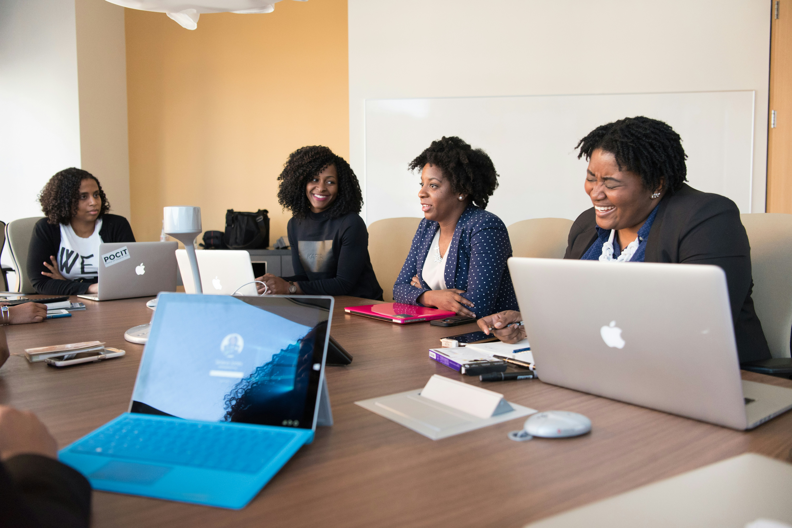

TechCon began in 2012 as a local meetup for tech enthusiasts and has grown into a premier annual conference attended by innovators, developers, entrepreneurs, and thought leaders from across the globe. Over the years, it has evolved from a single-day workshop to a three-day immersive experience featuring keynotes, hands-on sessions, product expos, and networking events.
From its humble beginnings in a university auditorium to selling out major convention centers, TechCon continues to foster collaboration and ignite forward-thinking innovation.
Mission
At TechCon, we believe that technology is a force for positive change. Our mission is to:
Empower minds by sharing cutting-edge tech knowledge and trends.
Bridge the gap between startups and investors, learners and mentors, visionaries and builders.
Inspire action through thought-provoking sessions, hands-on labs, and networking opportunities.
We aim to create a platform where innovation meets purpose, driving the future of tech with integrity, creativity, and collaboration.

Past Speakers
Over the years, TechCon has hosted a diverse lineup of speakers who are leaders in their fields. From tech giants to innovative startups, our past speakers have included:
John Smith - CTO of Future Solutions
Emily Johnson - Founder of GreenTech
These industry pioneers have shared their insights on emerging technologies, entrepreneurship, and the future of tech.
John Smith, CTO of Future SolutionsEmily Johnson, Founder of GreenTech